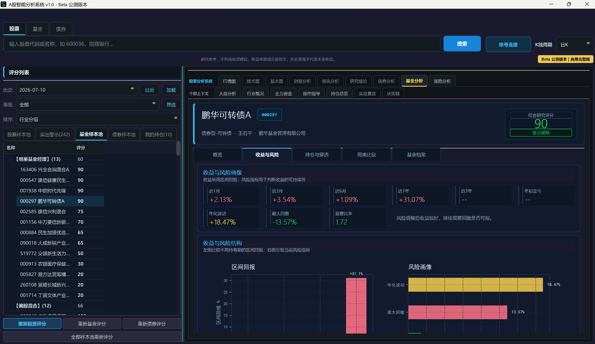

Market intelligence
Read regime, pace, and risk before deciding what deserves attention.

MARKET INTELLIGENCE / 2026
Understand the market before you trade.
A market intelligence workbench that brings assets, risk, market context, and review trails into one research surface.
A research and decision-support tool. It is not investment advice, a return guarantee, or a trading instruction.
THE RESEARCH CONSTELLATION
Place scattered market information back into an explainable context, so every observation carries evidence, boundaries, and a next step.
Read regime, pace, and risk before deciding what deserves attention.
Bring fundamentals, industry context, news, and conclusions into one reading surface.
Move from a single instrument to exposure, concentration, and correlation.
Keep the timeline and evidence behind a judgment, ready to revisit and discuss.
FROM SIGNAL TO JUDGMENT
Scorpio does not make the decision for you. It gives shape to what you saw, why it matters, and what evidence is still missing.
Prices, valuations, events, and behaviour.
Industry, product, risk, and comparables.
Test a hypothesis against data and time.
Leave a trail for every important judgment.
THE LIVE WORKBENCH
Equities, funds, bonds, and portfolio context no longer live in separate windows. The workbench is organized around research tasks, preserving useful complexity and a visible next move.
Get the complete editionDELIVERY PATH
A legible delivery path that does not leave users stranded after download.
PUBLIC BOUNDARY
The public site shows research experience, product capability, and delivery. It does not disclose private methods, internal chains, or personalized strategy thinking. Scorpio augments research cognition; it does not replace independent judgment.
Read the changelog